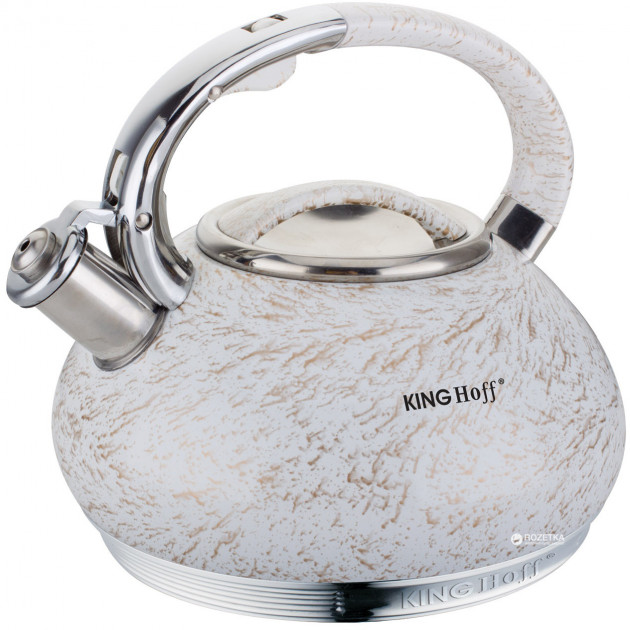

Чайник KingHoff со свистком 3 л (KH1066)
Компания KingHoff специализируется на импорте и продаже товаров для дома. Она предлагает изделия из высококачественной нержавеющей стали в сочетании со стеклом, керамикой и другими материалами, обычно используемыми в производстве бытовой техники.Новейшие технологии, высокое качество, функциональность и эстетичность их продуктов являются отличительными признаками данного производителя.Чайник KingHoff изготовлен из высококачественной нержавеющей стали, что способствует быстрому и равномерному нагреванию и распределению тепла.